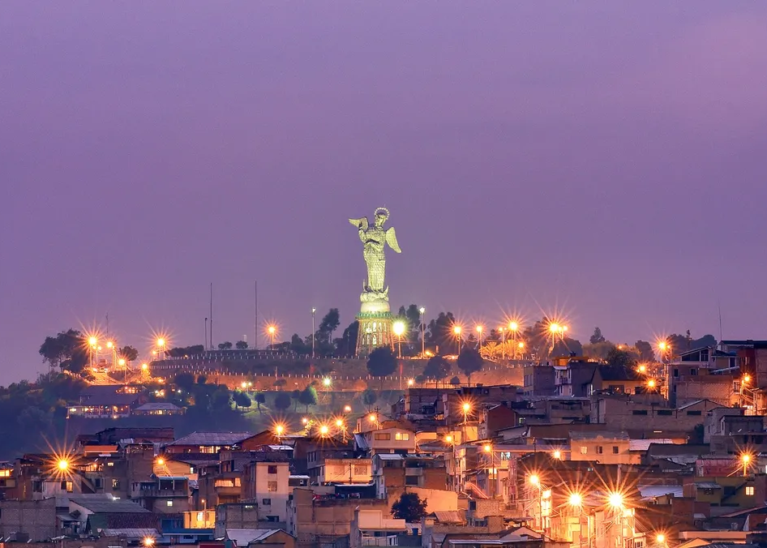

Localização:
Equador
Melhor época:
A melhor época para visitar Quito é entre os meses de junho e setembro, durante a estação seca. Neste período, o clima é mais agradável, com menos chuvas e temperaturas amenas.
Info:
Quito é a capital do Equador, localizada nos Andes a mais de 2.800 metros de altitude. É conhecida pelo seu centro histórico colonial, um dos mais bem preservados da América Latina e declarado Patrimônio Mundial pela UNESCO. A cidade fica bem perto da linha do Equador e tem uma vibe montanhosa e cultural.
